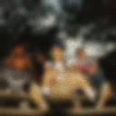
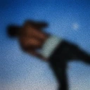
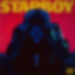
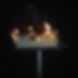
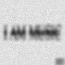
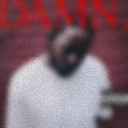
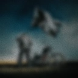
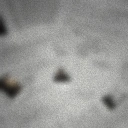
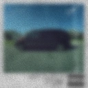
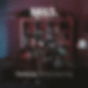

Активность
Обновлено: 28 июля 2025
| НАЗВАНИЕ | ГОД | КАТЕГОРИЯ | СЕЗОН |
|---|---|---|---|
| Оппенгеймер | 2023 | Фильм | - |
| Чернобыль | 2019 | Сериал | 1 |
| Анора | 2024 | Фильм | - |
| Властелин колец: Возвращение короля | 2001 | Фильм | - |
| Властелин колец: Две крепости | 2002 | Фильм | - |
| Властелин колец: Братство Кольца | 2001 | Фильм | - |
| Гордость и предубеждение | 2005 | Фильм | - | Аркейн | 2021 | Мультсериал | 1-2 | Чего хотят женщины | 2000 | Фильм | - | Черный лебедь | 2010 | Фильм | - | Титаник | 1997 | Фильм | - | Молчание ягнят | 1990 | Фильм | - | Факультет | 1998 | Фильм | - | Параллельный мир | 1992 | Фильм | - | Project X | 2012 | Фильм | - | В поисках Аляски | 2019 | Сериал | 1 | Братья | 2009 | Фильм | - | Морпехи | 2005 | Фильм | - | Адвокат дьявола | 1997 | Фильм | - | Ромео + Джульетта | 1996 | Фильм | - | Место под соснами | 2012 | Фильм | - | Охота | 2012 | Фильм | - | Искупление | 2007 | Фильм | - | Дневник памяти | 2004 | Фильм | - | Игры разума | 2001 | Фильм | - | Помни меня | 2010 | Фильм | - | Вечное сияние чистого разума | 2004 | Фильм | - | Ночной рейс | 2005 | Фильм | - | Побег из Претории | 2020 | Фильм | - | Сияние | 1990 | Фильм | - | Поймай меня, если сможешь | 2002 | Фильм | - | Спасти рядового Райана | 1998 | Фильм | - | Еще по одной | 2020 | Фильм | - | Человек, который познал бесконечность | 2015 | Фильм | - | Игра на понижение | 2015 | Фильм | - | Мистер Робот | 2015 | Сериал | 1-4 | Маяк | 2019 | Фильм | - | Хорошее время | 2017 | Фильм | - | Бердмэн | 2014 | Фильм | - | Дориан Грей | 2008 | Фильм | - | Останься | 2005 | Фильм | - | Спеши любить | 2002 | Фильм | - | Первому игроку приготовиться | 2018 | Фильм | - | Очень странные дела | 2016 | Сериал | 1-4 | Джокер | 2019 | Фильм | - | Тайное окно | 2004 | Фильм | - | 12 лет рабства | 2013 | Фильм | - | Большой куш | 2000 | Фильм | - | Миллионер из трущоб | 2008 | Фильм | - | Социальная сеть | 2010 | Фильм | - | Эдвард руки-ножницы | 1990 | Фильм | - | Общество мертвых поэтов | 1989 | Фильм | - | Отбросы | 2009 | Сериал | 1-5 | Лолита | 1997 | Фильм | - | Эффект бабочки | 2013 | Фильм | - | Американская история X | 1998 | Фильм | - | Плакса | 1990 | Фильм | - | На игле | 1995 | Фильм | - | На игле 2 | 2017 | Фильм | - | Реквием по мечте | 2000 | Фильм | - | Форрест Гамп | 1994 | Фильм | - | Первобытный страх | 1996 | Фильм | - | Семь | 1995 | Фильм | - | Дневник баскетболиста | 1995 | Фильм | - | Олдбой | 2003 | Фильм | - | Ван Гог. На пороге вечности | 2018 | Фильм | - | Без гроша | 2019 | Сериал | 1-4 | 28 дней спустя | 2002 | Фильм | - | 28 недель спустя | 2007 | Фильм | - | Твое имя | 2016 | Аниме | - | Зеленая миля | 1999 | Фильм | - | Время | 2011 | Фильм | - | Идиократия | 2005 | Фильм | - | Американский психопат | 2000 | Фильм | - | Бойцовский клуб | 1999 | Фильм | - | Уэнздей | 2022 | Сериал | 1 | Оно. Часть 1 | 2017 | Фильм | - | Оно. Часть 2 | 2019 | Фильм | - | Помни | 2000 | Фильм | - | Престиж | 2006 | Фильм | - | Крайний космос | 2016 | Мультсериал | 1-3 | Начало | 2010 | Фильм | - | Интерстеллар | 2014 | Фильм | - | Дюнкерк | 2017 | Фильм | - | Довод | 2020 | Фильм | - | Карты, деньги, два ствола | 1998 | Фильм | - | Черное зеркало | 2011 | Сериал | 1-5 | Джентльмены | 2019 | Фильм | - | Ходячий замок | 2004 | Аниме | - | Загадочная история Бенджамина Баттона | 2008 | Фильм | - | Великий Гэтсби | 2013 | Фильм | - | Бегущий по лезвию | 1982 | Фильм | - | Бегущий по лезвию 2049 | 2017 | Фильм | - | Криминальное чтиво | 1994 | Фильм | - | Унесенные призраками | 2001 | Фильм | - | Джанго освобожденный | 2012 | Фильм | - | Одни из нас | 2023 | Сериал | 1 | Бесславные ублюдки | 2009 | Фильм | - | Посмотри на меня: XXXTENTACION | 2022 | Фильм | - | Однажды в Голливуде | 2019 | Фильм | - | Остров проклятых | 2009 | Фильм | - | Lil Peep: Все за всех | 2019 | Фильм | - | Волк с Уолл-стрит | 2013 | Фильм | - | Драйв | 2011 | Фильм | - | Список Шиндлера | 1993 | Фильм | - | Побег из Шоушенка | 1994 | Фильм | - | Достучаться до небес | 1997 | Фильм | - | Жизнь прекрасна | 1997 | Фильм | - | Назад в будущее | 1985 | Фильм | - | Назад в будущее 2 | 1989 | Фильм | - | Назад в будущее 3 | 1990 | Фильм | - | Леон | 1994 | Фильм | - | Пианист | 2002 | Фильм | - | Что гложет Гилберта Грейпа | 1993 | Фильм | - | Таксист | 1976 | Фильм | - | Бандерснэтч | 2018 | Фильм | - | Мальчик в полосатой пижаме | 2008 | Фильм | - | 1917 | 2019 | Фильм | - | Город лжи | 2018 | Фильм | - | Робот по имени Чаппи | 2015 | Фильм | - | 45 лет | 2015 | Фильм | - | Секретарша | 2001 | Фильм | - | Рейв | 2019 | Фильм | - | Богемская рапсодия | 2018 | Фильм | - | Время | 2021 | Фильм | - | Скотт Пилигрим против всех | 2010 | Фильм | - | Кролик Джоджо | 2019 | Фильм | - | Господин Никто | 2009 | Фильм | - | Гарри Поттер и Философский камень | 2001 | Фильм | - | Гарри Поттер и Тайная комната | 2002 | Фильм | - | Гарри Поттер и Узник Азкабана | 2004 | Фильм | - | Гарри Поттер и Кубок огня | 2005 | Фильм | - | Гарри Поттер и Орден Феникса | 2007 | Фильм | - | Гарри Поттер и Принц-полукровка | 2009 | Фильм | - | Гарри Поттер и Дары Смерти. Ч1 | 2010 | Фильм | - | Гарри Поттер и Дары Смерти. Ч2 | 2011 | Фильм | - |
| ОБЛОЖКА | АЛЬБОМ | МУЗЫКАНТ | ГОД |
|---|---|---|---|
 |
2007, Ч.2 | uniqe, nkeeei, ARTEM SHILOVETS | 2025 |
 |
Dark Times | Vince Staples | 2024 |
 |
K.I.D.S | Mac Miller | 2010 |
 |
Birds In The Trap Sing McKnight | Travis Scott | 2016 |
 |
Rodeo | Travis Scott | 2015 |
 |
Days Before Rodeo | Travis Scott | 2014 |
 |
Views | Drake | 2016 |
 |
Starboy | The Weekend | 2016 |
 |
Astroworld | Travis Scott | 2016 |
 |
Stay Trippy | Juicy J | 2013 |
 |
Donda | Kanye West | 2021 |
 |
Donda 2 | Kanye West | 2025 |
| FutureSex/LoveSounds | Justin Timberlake | 2006 | |
| Beauty Behind The Madness | The Weekend | 2015 | |
 |
Music | Playboi Carti | 2025 |
 |
Vultures 1 | Kanye West | 2024 |
 |
Vultures 2 | Kanye West | 2024 |
 |
Damn. | Kendrick Lamar | 2017 |
| Born To Die | Lana Del Rey | 2012 | |
 |
Hardstone Phycho | Don Toliver | 2024 |
 |
Loose | Nelly Furtado | 2006 |
 |
Graduation | Kanye West | 2007 |
 |
17 | XXXTENTACION | 2017 |
| Blurryface | Twenty One Pilots | 2015 | |
| U.S.T | The Thuth | 2022 | |
 |
Harry's House | Harry Styles | 2022 |
 |
Yeezus | Kanye West | 2013 |
 |
Good Kid, M.A.A.D City | Kendrick Lamar | 2013 |
 |
Hurry Up, We're Dreaming | M83 | 2011 |
 |
My Beautiful Dark Twisted Fantasy | Kanye West | 2010 |
 |
Платина | Платина | 2024 |  |
Джон Гарик | Классика | 2024 |
| НАЗВАНИЕ | АВТОР | ГОД | СТАТУС |
|---|---|---|---|
| Цветы для Элджернона | Дэниел Киз | 1959 | Завершено |
| Великий Гэтсби | Фрэнсис Фицджеральд | 1925 | Завершено |
| Мартин Иден | Джек Лондон | 1909 | Завершено |
| 451 градус по Фаренгейту | Рэй Брэдбери | 1953 | Завершено |
| 1984 | Джордж Оруэлл | 1949 | Завершено |
| Я был секретарем (цензура) | - | - | Завершено |
| НАЗВАНИЕ | ГОД | ВРЕМЯ В ИГРЕ | СТАТУС |
|---|---|---|---|
| Disney’s Aladdin (SNES) | 1993 | 3 ч. | Завершено |
| God Of War | 2018 | 38 ч. | Завершено |
| Fallout 4 | 2015 | 4 ч. | Не завершено |
| Life is Strange: True Colors | 2021 | 11 ч. | Завершено |
| The Evil Within 2 | 2017 | 25 ч. | Завершено |
| Far Cry 3 | 2012 | 40 ч. | Завершено |
| Far Cry 5 | 2017 | 49 ч. | Не завершено |
| The Evil Within 2 | 2017 | 25 ч. | Завершено |
| Risen | 2009 | 29 ч. | Завершено |
| Gothic 3 | 2004 | 58 ч. | Завершено |
| Valiant Hearts: The Great War | 2014 | 13 ч. | Завершено |